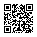

inDisaster Networking
Point your phone camera at the code to join the network.

disaster-networking.vercel.app

Works on any phone camera. No account or app needed.
Point your phone camera at the code to join the network.

disaster-networking.vercel.app
Works on any phone camera. No account or app needed.